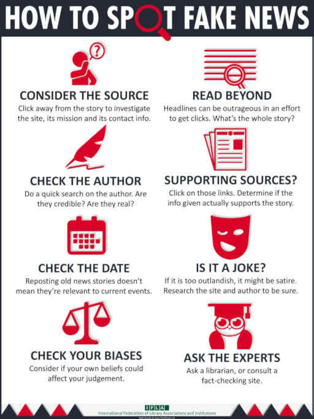

Fake News!
"Extra! Extra! Read all about it!" The yesteryear call of the street-corner newsy might intone a deeper message today. Yes, read ALL about it. Read through multiple sources and consider their trustworthiness and authority. Read up on the topics and evidence and draw your own reasoned, substantiated conclusion. Read into the motives and means of presentation of the sources you review. Being an interested investigator of your own world means not taking anything at face value but relying on evidence and reason to decide for yourself. The tools here at Informus can help you on your search! There are several measures you can take to guard yourself against the threat of fake news discussed below. Check out our EDUCATE page to discover more or begin your search here
-Curt Schmelzel, Informus Editor